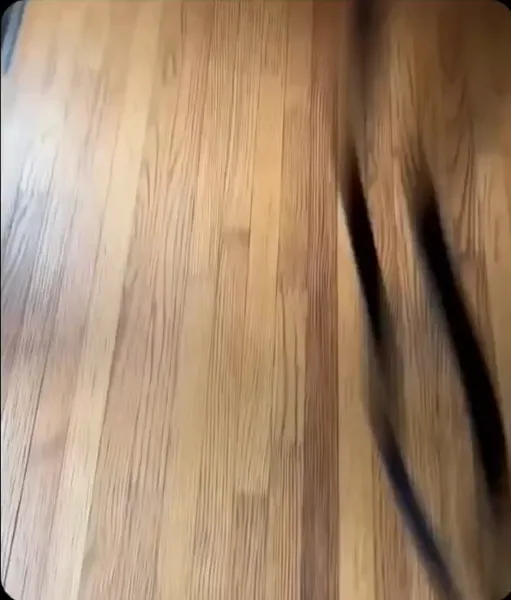

F1 코스 디자인 과정.gif
댓글
어 진짠가...?
뭔가 익숙해
진짠데?
왜 얼추 맞냨ㅋㅋ
한 100번던져서 비슷한거만 추린거아닐까
뻐큐안하네
왘ㅋㅋ 얼추 맞아보여ㅋㅋㅋ
그럴듯한데
비슷한대? ㅋㅋㅋ
몬자ㄷㄷ
헤어핀 구간 제법 맛있는데?
어??? 진짠가??
다 어디 레이싱겜에서 본거같은데ㅋㅋㅋㄱㅋㅋㅋㅋ
생각보다 그럴싸하네 ㅋㅋ
한두개는 그냥 몬자서킷이네 ㅋㅋㅋㅋㅋ
진짜같은데 ㅋㅋ
맞는것 같은데..?
상하이 스즈카 제다 보인다보여 ㅋㅋㅋ
그럴듯 하잖아!
ㅈㄴ 그럴듯하네ㅋㅋ
진짜 타이밍벨트 빼와서 던지는 느낌이네
ㅋㅋㅋㅋㅋㅋㅋㅋㅋㅋㅋㅋㅋㅋㅋㅋ ㄹㅇ인데
첫번째 실버스톤같네
꽤 정확한데